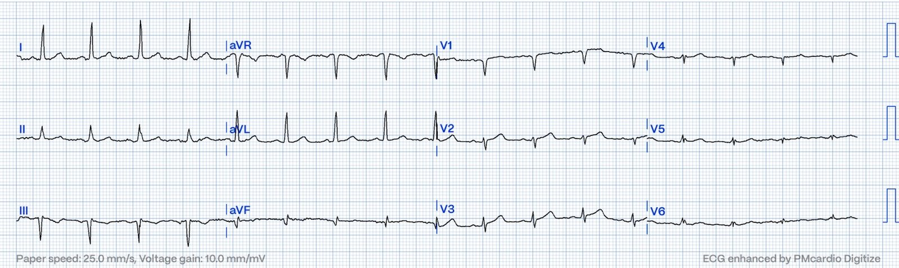
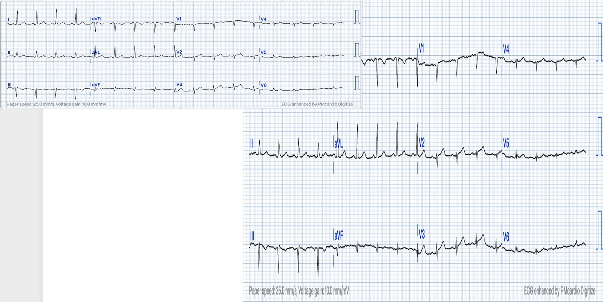
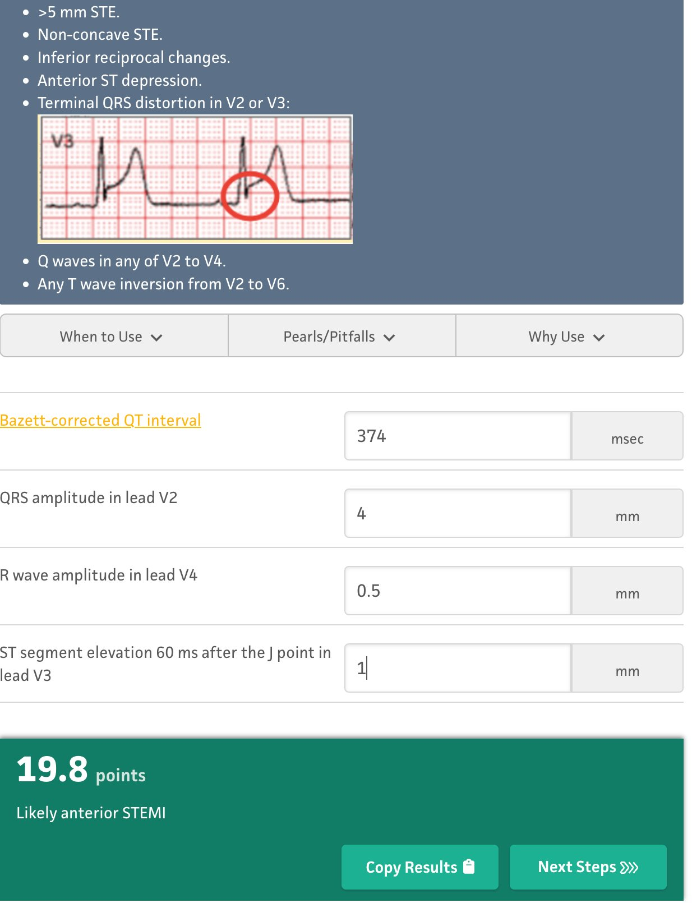
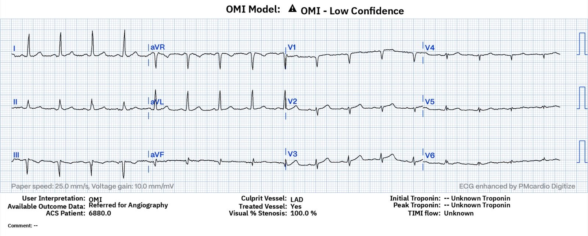
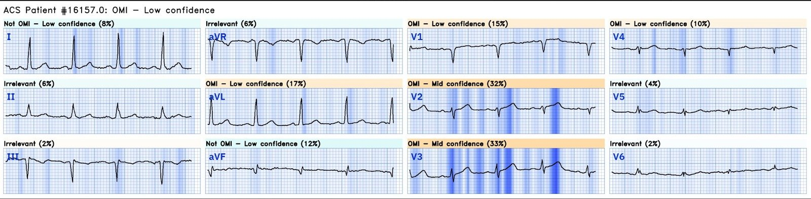
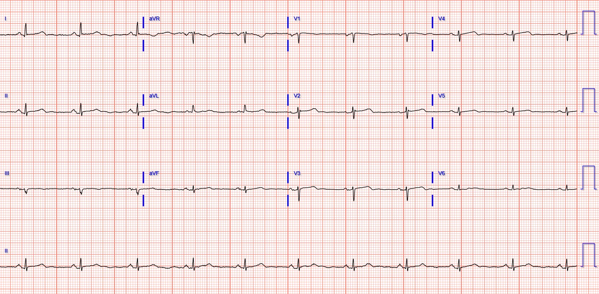
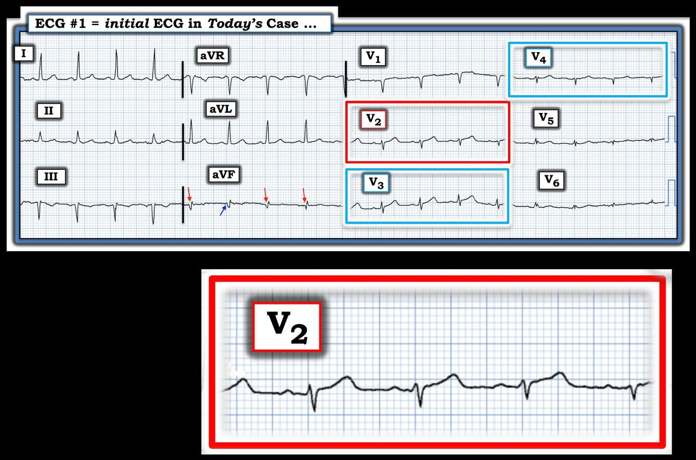
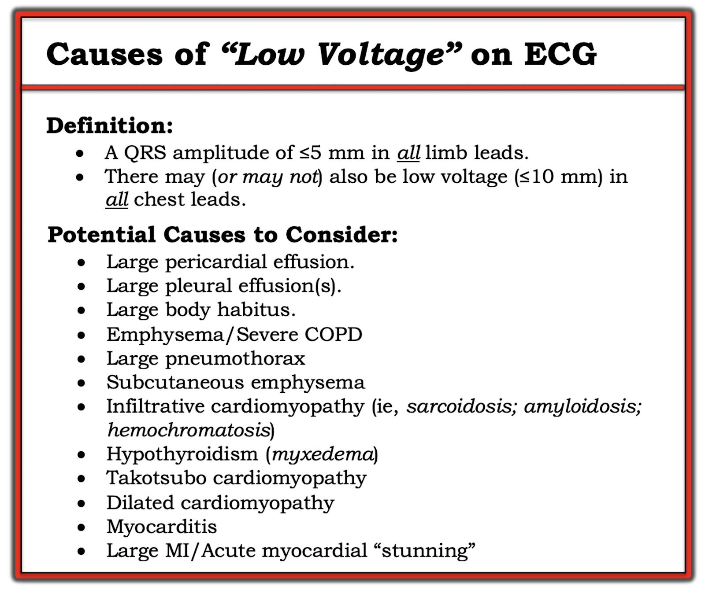

13/12/2023 — Tính tương xứng là một yếu tố chính trong chẩn đoán OMI trên điện tâm đồ
Bản dịch tiếng Việt của bài "Proportionality is a major element in the ECG Diagnosis of OMI." – Dr. Smith’s ECG Blog. Giữ nguyên toàn bộ 9 hình ảnh của bản gốc.
Bệnh nhân trung niên này đến khám vì đau ngực:


Bạn nghĩ gì?
Điện thế RẤT thấp. Có một ít ST chênh lên, nhưng RẤT ÍT. Nhưng hãy xem QRS nhỏ đến mức nào!!
Hãy kéo giãn QRS theo chiều dọc để nó không còn quá nhỏ:


Phía trên bên trái là bản gốc.
Bên phải là các chuyển đạo trước tim đã được kéo giãn theo chiều dọc, để QRS không còn nhỏ xíu. Giờ bạn có thể thấy rõ hơn ST chênh lên (STE) và sóng T tối cấp.
Tôi đã công bố, và Emre Aslanger đã thẩm định ngoại kiểm, công thức 4 biến để phân biệt ST chênh lên của OMI do LAD với ST chênh lên bình thường.
Công thức này được xây dựng/thẩm định/thiết kế để hiệu chỉnh cho QRS biên độ nhỏ (điện thế thấp), bằng cách đưa vào biên độ sóng R ở V4 và tổng biên độ QRS ở V2.
Đây là kết quả cho điện tâm đồ này, từ MDcalc.com:


Điểm cắt chính xác nhất là 18,2.
Giá trị trên 18,2 (OMI do LAD) so với dưới ngưỡng này (biến thể bình thường) có độ nhạy và độ đặc hiệu khoảng 88% đối với OMI do LAD.
Giá trị trên 19 có độ đặc hiệu khoảng 97% đối với OMI do LAD.
Phiên bản 1 của ứng dụng AI Queen of Hearts được huấn luyện dựa trên nhận định chủ quan của chúng tôi về OMI so với không phải OMI, và chúng tôi (Pendell và tôi) luôn tính đến tính tương xứng (proportionality).
Vì vậy chúng tôi đã dạy Queen bằng những ca điện thế rất thấp nhưng là OMI.
Và cô ấy đã học rất tốt:


Cô ấy không có độ tin cậy cao, nhưng cô ấy vẫn chẩn đoán là OMI.
Kết cục:
Tắc 100% LAD
Đây là phần Queen giải thích lý do:


Màu xanh đậm cho chúng ta biết cô ấy đặc biệt chú ý vào QRS ở V3 và sóng T ở V2 và V3.
Đây là một ca tương tự từ Pendell:
Điện tâm đồ này được trao lại tại khu phân loại (triage). Hãy xem AI Queen of Hearts xử lý thế nào với những hình ảnh giải thích (explainability) này.


Ứng dụng Queen of Hearts PM Cardio hiện đã có mặt tại Liên minh châu Âu (được chứng nhận CE) trên App Store và Google Play. Với người Mỹ, bạn cần chờ FDA. Nhưng trong lúc chờ đợi:
BẠN CÓ CƠ HỘI ĐƯỢC TRUY CẬP SỚM BOT AI PM Cardio!! (ỨNG DỤNG AI PM CARDIO VỀ OMI)
Nếu bạn muốn bot này giúp bạn chẩn đoán sớm OMI và cứu bệnh nhân cùng cơ tim của họ, bạn có thể đăng ký để nhận phiên bản beta sớm của bot tại đây. Bot hiện chưa phát hành, nhưng đây là cách để bạn có tên trong danh sách.
https://share-eu1.hsforms.com/18cAH0ZK0RoiVG3RjC5dYdwfyfsg (biểu mẫu đăng ký nhận bản beta sớm)

===================================
BÌNH LUẬN CỦA TÔI, bởi KEN GRAUER, MD (13/12/2023):
===================================
Đúng như Dr. Smith nói — khái niệm MẤU CHỐT trong ca hôm nay là tính tương xứng. Dù vậy — sóng ST-T ở chuyển đạo V2 trông nhỏ chỉ khi nhìn trong bối cảnh chiều cao tuyệt đối của nó, như một trong 12 chuyển đạo của điện tâm đồ ban đầu được trình bày ở trên trong bài hôm nay.
- Để rõ ràng, trong Hình 1 — tôi đã tái hiện bản ghi ban đầu này, và thêm bên dưới một hình phóng to của chuyển đạo V2.
CA BỆNH hôm nay:
Chúng tôi chỉ được cung cấp thông tin hạn chế về bệnh nhân trong ca hôm nay — cụ thể là bệnh nhân là một người lớn trung niên đến khám vì CP (đau ngực – Chest Pain).
- Từ hình phóng to chuyển đạo V2 trong Hình 1 hẳn phải thấy ngay rằng — trong bối cảnh CP mới xuất hiện — sóng ST-T ở chuyển đạo V2 là tối cấp vì: i) Sóng T ở chuyển đạo này cao không tương xứng (rõ ràng cao hơn sóng R ở V2); — và, ii) Sóng T này “béo hơn” ở đỉnh và rộng hơn ở đáy nhiều so với mức dự kiến khi xét biên độ nhỏ của QRS ở chuyển đạo này.
- Theo khái niệm chuyển đạo “lân cận” — hầu như không còn nghi ngờ gì rằng sóng ST-T ở chuyển đạo V3 cũng tối cấp (cao bằng sóng R ở chuyển đạo V3 — với đáy rộng không tương xứng).
- Chuyển đạo “lân cận” tiếp theo là chuyển đạo V4 — nơi phức bộ QRST còn nhỏ hơn nữa so với ở chuyển đạo V2 và V3 — NHƯNG — xét tương xứng với QRS nhỏ xíu ở chuyển đạo V4 (và trong bối cảnh đã biết sóng ST-T ở chuyển đạo V2 và V3 là tối cấp) — tôi diễn giải sóng T ở chuyển đạo V4 là “đầy đặn hơn” mức tôi dự kiến.
- ĐIỀU CỐT LÕI: Ở người lớn trung niên có CP mới xuất hiện này — như vậy là có 3 chuyển đạo trước liên tiếp (V2,V3,V4) với sóng T tối cấp — gợi ý OMI do LAD cấp cho đến khi chứng minh được điều ngược lại.
Các dấu hiệu điện tâm đồ bổ sung trong CA BỆNH hôm nay:
- HÃY NHÌN LẠI bản ghi ban đầu hôm nay trong Hình 1. Ngoài 3 sóng T tối cấp liên tiếp ở các chuyển đạo trước — BẠN thấy thêm những dấu hiệu điện tâm đồ nào trong Hình 2?


Các dấu hiệu điện tâm đồ bổ sung:
Có một số dấu hiệu bổ sung thú vị trên điện tâm đồ ban đầu hôm nay:
- Dường như có sóng Q lớn ở chuyển đạo III và aVF. Nếu đúng vậy — kích thước sóng Qr này ở chuyển đạo III, cùng với sóng Q có vẻ rộng ở chuyển đạo aVF — dường như gợi ý nhồi máu thành dưới cũ vào một thời điểm nào đó trong quá khứ. Biết bệnh nhân có tiền sử bệnh mạch vành có thể có ý nghĩa với ca hôm nay — vì điều đó càng làm tăng nghi ngờ của chúng ta về một biến cố cấp mới.
- Dù vậy — BẠN có để ý hình dạng thay đổi của sóng Q ở chuyển đạo aVF không? (các mũi tên ĐỎ). Phức bộ QRS thứ 2 ở chuyển đạo này thực ra biểu hiện dạng rSr’ (mũi tên XANH chỉ một biến thiên dương ban đầu). Điều này có thể do số hóa bản ghi kém — HOẶC do chất lượng kém của điện tâm đồ gốc — HOẶC do một hiện tượng tôi thỉnh thoảng gặp, đó là hình dạng QRS ở chuyển đạo III và aVF đôi khi bị thay đổi theo hô hấp do chuyển động của cơ hoành có thể ảnh hưởng tới các chuyển đạo dưới này, dẫn đến sóng Q lúc có lúc không ở các chuyển đạo này.
- HOẶC — Phải chăng có đảo điện cực LA-LL ??? Vì lý do kỹ thuật — sóng P không thấy rõ trên bản ghi này — NHƯNG — sóng P ở chuyển đạo I có vẻ lớn hơn sóng P ở chuyển đạo II, đây thường là manh mối gợi ý đảo điện cực LA-LL (Xem bình luận của tôi trong các bài ngày 19 tháng Mười Một năm 2020 và ngày 24 tháng Năm năm 2022 trên Dr. Smith’s ECG Blog).
- Lý do tôi nghiêng về đảo điện cực LA-LL là khi đó chuyển đạo III “thật” sẽ bị đảo ngược (tạo ra QRS dương ở chuyển đạo III) — và chuyển đạo aVF và aVL sẽ đổi chỗ cho nhau. Do đó, nếu có đảo điện cực LA-LL — điều này sẽ xóa bỏ các “sóng Q” trông bất thường mà ta đang thấy ở chuyển đạo III và aVF. Chất lượng chưa tối ưu của bản ghi hôm nay khiến ta không thể biết có hay không có đảo điện cực LA-LL — NHƯNG — Nên lưu tâm tới khả năng này, vì bạn sẽ muốn kiểm tra lại vị trí đặt điện cực và lập tức ghi lại điện tâm đồ khi lo ngại có OMI cấp đang diễn ra.
===========================
ĐIỆN THẾ THẤP:
Cuối cùng, đúng như Dr. Smith nói — có điện thế thấp cực độ ở các chuyển đạo trước ngực! Chúng tôi thỉnh thoảng ôn lại các ca điện thế thấp — điều này càng có ý nghĩa đặc biệt khi ca hôm nay là một bệnh nhân CP mới xuất hiện!
- Để ôn lại — tôi đã sao chép Bảng trong Hình 2 từ các thảo luận trước đây về những nguyên nhân có thể gây điện thế thấp (Xem bình luận của tôi trong các bài ngày 15 tháng Mười năm 2023 — ngày 12 tháng Mười Một năm 2020 — và ngày 24 tháng Một năm 2020 trên Dr. Smith’s ECG Blog).
- Chẩn đoán phân biệt cho “điện thế thấp” mà nhiều người hành nghề thường đưa ra hay chỉ giới hạn ở COPD và/hoặc tràn dịch màng ngoài tim. Như trình bày trong Hình 2 — còn có những bệnh cảnh khác cần cân nhắc! Các nguyên nhân có thể gây điện thế thấp có liên quan cần cân nhắc trong ca hôm nay gồm: i) Tràn dịch màng ngoài tim; ii) Bệnh cơ tim Takotsubo; và, iii) Một nhồi máu lớn cấp (hoặc mới xảy ra), có thể dẫn đến “choáng” cơ tim (myocardial stunning)
- Choáng cơ tim (“stunning”) — được mô tả là tình trạng giảm rõ rệt thoáng qua sức co bóp của tim, xảy ra để đáp ứng với một tổn thương cấp nặng. Hiện tượng này được ghi nhận liên quan với ngừng tim; sau phẫu thuật tim; sau chuyển nhịp một rối loạn nhịp nhanh bền bỉ; với một số loại biến cố mạch máu não cấp (như xuất huyết dưới nhện) — và, liên quan với nhồi máu cơ tim cấp diện rộng, đây có thể chính là bệnh cảnh lâm sàng của ca hôm nay!

